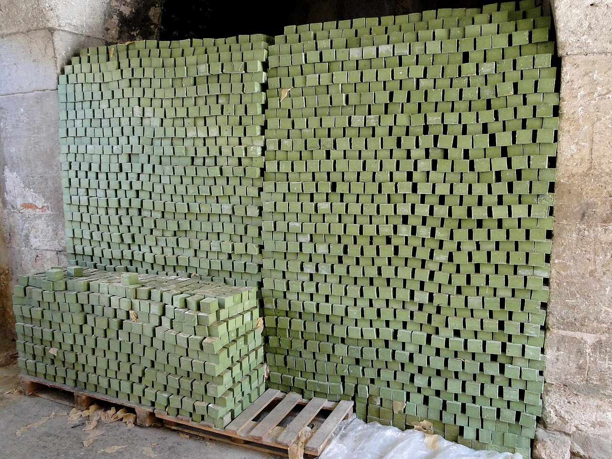

Limpieza

Limpieza
Aquí aprendes por qué limpia un tensioactivo, cómo se calcula un jabón y cómo se espesa un gel.
Las palabras que vas a usar
pH
Medida de acidez. De 0 a 7 es ácido, 7 es neutro y hasta 14 es alcalino. La piel ronda de 4 a 6.
Tensioactivo
Molécula con cabeza que ama el agua y cola que ama la grasa. Limpia, hace espuma o emulsiona. Sodium Laureth Sulfate.
Aniónico
Tensioactivo con carga negativa: limpia y hace espuma. SLES.
Catiónico
Tensioactivo con carga positiva: se pega al cabello y lo suaviza. Cloruro de cetrimonio.
Anfótero
Cambia de carga con el pH. Suaviza la mezcla. Cocamidopropil betaína.
No iónico
Sin carga. Suave. Coco glucósido.
Micela
Grupo de tensioactivos con las colas hacia adentro. Ahí se esconde la grasa.
CMC
Concentración micelar crítica: desde ahí se forman micelas. Dodecilsulfato de sodio, cerca de 8.2 mM.
Materia activa
La parte del ingrediente que es tensioactivo. El resto es agua. SLES líquido: 27 %.
Curva de sal
Cómo cambia la viscosidad al agregar sal: sube hasta un máximo y luego baja.
Jabón
Sal de un ácido graso. Se hace con grasa y una base.
Saponificación
Reacción de una grasa con una base. Da jabón y glicerina.
SAP
Miligramos de KOH que saponifican un gramo de grasa. Coco: de 248 a 265.
Sobreengrase
Parte del aceite que dejas sin reaccionar a propósito. 5 %.
Lejía
En jabonería, la solución de sosa o potasa en agua. El cloro de lavar es otra cosa.
Curado
Semanas en que el jabón pierde agua y termina de reaccionar.
Syndet
Barra o líquido limpiador sin jabón, hecho con tensioactivos sintéticos.
Lección 1. Cómo se quita la grasa
El agua sola no moja la grasa. Un tensioactivo tiene una cabeza que ama el agua y una cola que ama la grasa, y se coloca entre las dos. Limpia de cuatro maneras: enrolla la grasa hasta desprenderla, la parte en gotas, la ablanda y la esconde dentro de micelas.
Con poco tensioactivo, cada molécula anda suelta.
Pasada la concentración micelar crítica, las que sobran se juntan: colas adentro, cabezas afuera.
Con sal, la CMC baja. Con NaCl 0.10 M, la del dodecilsulfato de sodio pasa de unos 8.2 a 1.49 mM.
Mueve la cantidad y la CMC. Laboratorio: sal y micelas.
Lección 2. Cuatro familias
| Familia | Carga | Papel | Ejemplo |
|---|---|---|---|
| Aniónica | negativa | limpia y hace espuma | Sodium Laureth Sulfate |
| Anfótera | cambia con el pH | suaviza y sostiene la espuma | Cocamidopropyl Betaine |
| No iónica | ninguna | suave | Coco-Glucoside |
| Catiónica | positiva | acondiciona | Cetrimonium Chloride |
Un limpiador suele llevar un aniónico, hasta 10 % de activo, y un anfótero, de 1 a 5 %. Juntos forman micelas mixtas con menos carga: irritan menos y espesan más.
La espuma engaña. La cantidad de espuma no dice cuánto limpia.
Por qué irrita. El tensioactivo hincha las proteínas de la piel y se lleva lípidos. Los limpiadores con pH mayor que 8 la hinchan más.
Lección 3. Materia activa
El tensioactivo se vende diluido. Para saber cuánto pesar:
\[g = \frac{lote \times \%\,activo\ que\ quieres}{\%\,activo\ del\ ingrediente}\]
Ejemplo resuelto. Quieres 500 g de gel con 8 % de SLES y tienes líquido al 27 %. Pesas 500 × 8/27 = 148.1 g. El agua que trae ese líquido cuenta como parte del agua de la fórmula.
Usa la calculadora o el laboratorio de activo.
Cuidado. En glucósidos, «sólidos» y «activo» no son lo mismo: el residuo seco incluye sal.
Lección 4. Espesar con sal
La sal tapa la repulsión entre cabezas. Las micelas crecen, se enredan y el líquido espesa. Pasado un máximo se ramifican y la viscosidad cae. Más sal ya no la recupera.
En una mezcla con 10 % total de betaína y SLES, 2 a 8, el máximo estuvo cerca de 0.6 % de NaCl. El tuyo será otro: traza tu curva en pasos de 0.2 %.
Los glucósidos no espesan con sal. Se usa una goma o un polímero.
Lección 5. Jabón
Grasa y base dan jabón y glicerina. El SAP dice cuánta base pide cada aceite:
\[m_{NaOH} = \sum \frac{m_i\,SAP_i}{1000}\cdot\frac{40.00}{56.11}\,(1 - s)\]
donde \(s\) es el sobreengrase.
Una grasa es glicerina con tres cadenas.
Llega la lejía, que en jabonería es la solución de sosa: una base por cadena. El cloro de lavar es otra sustancia. La sosa quema piel y ojos: guantes, lentes y manga larga.
Quedan tres jabones y una glicerina.
El jabón mete la cola en la grasa y deja la cabeza en el agua. Así la arrastra.
Ejemplo resuelto. 500 g de oliva con SAP 190 y 5 % de sobreengrase: 500 × 190/1000 × 40.00/56.11 × 0.95 = 64.3 g de NaOH.
| Regla de seguridad | Por qué |
|---|---|
| La sosa se agrega al agua | al revés hierve y salpica |
| Ventilación | suelta vapor irritante |
| Balanza de 0.1 g | un error deja álcali libre |
| Vinagre lejos | neutralizar sobre la piel da calor; se enjuaga con agua |
Dureza, limpieza y cremosidad, como las dan las calculadoras populares, son sumas de ácidos grasos. Son convenciones. El SAP y el índice de yodo sí se miden.
El pH de un jabón va de 8.5 a 11.0 según la fuente. Un syndet queda de 5.5 a 7.0.
Qué puedes hacer
Comprueba lo que aprendiste
Fuentes
Codex CXS 210-1999 (ed. 2015). Baki 2023, ISBN 978-1-119-70977-0, pp. 184-236. Mukerjee y Mysels 1971, DOI 10.6028/NBS.NSRDS.36. Thompson et al. 2023 y Mijaljica et al. 2022, citados en la nota 02 de la investigación.